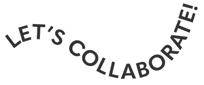

CASE
STUDIES
Amtrak App - Task Flow Redesign
In this redesign, I learned the importance of microinteractions and the skills of creating signature features...
Euronews Website - Navigation Redesign
Through a heuristic evaluation process, a peer and I rated certain elements...
Arctic Monkeys Website - Style Redesign
I decided to add more branding features such as a bio about the band, make their logo consistent across the pages, and more...
email me >
